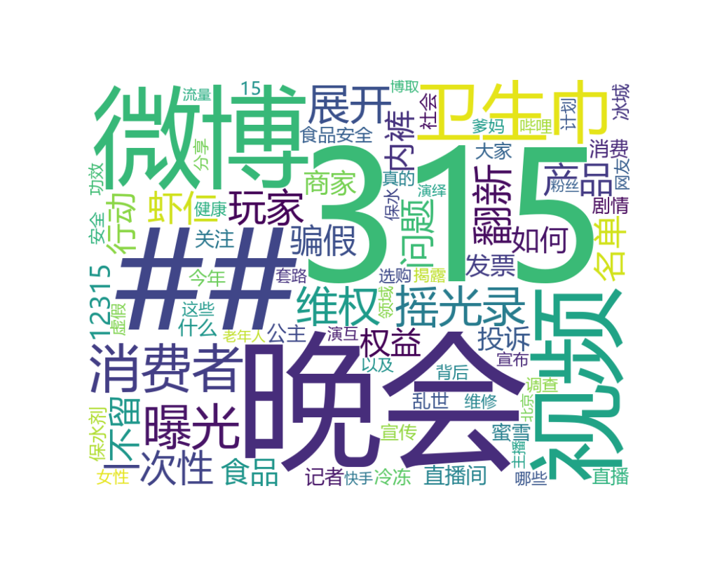

| 排名 | 热搜 | 直达链接 | 热度 |
|---|---|---|---|
| {{ obj.rank }} | {{ obj.hot_title }} | {{ obj.hot_href }} | {{ obj.hot_num }} | {% endfor %}
| 排名 | 热搜 | 直达链接 | 热度 |

| 时间 | 今日阅读量 | 今日讨论量 | 今日互动量 | 今日原创量 |
|---|---|---|---|---|
| 3.30 | 62890 | 845 | 919 | 679 |
| 3.31 | 52682 | 1096 | 1138 | 933 |
| 4.1 | 16574 | 1096 | 1199 | 874 |
| 4.2 | 5642 | 968 | 1194 | 796 |
| 4.3 | 7266 | 797 | 1003 | 611 |
| 4.4 | 7490 | 918 | 1299 | 718 |
| 4.5 | 4348 | 369 | 533 | 306 |
| 时间 | 今日阅读量 | 今日讨论量 | 今日互动量 | 今日原创量 |
| 时间 | 今日阅读量 | 今日讨论量 | 今日互动量 | 今日原创量 |
|---|---|---|---|---|
| 3.30 | 144406608 | 191849 | 743699 | 14484 |
| 3.31 | 198930692 | 161084 | 598246 | 14533 |
| 4.1 | 79316950 | 161585 | 510317 | 8802 |
| 4.2 | 73100341 | 118196 | 504687 | 9677 |
| 4.3 | 351481878 | 281094 | 881862 | 24175 |
| 4.4 | 204359898 | 185302 | 752538 | 17650 |
| 4.5 | 103101323 | 1211608 | 2491365 | 10693 |
| 时间 | 今日阅读量 | 今日讨论量 | 今日互动量 | 今日原创量 |
| 时间 | 今日阅读量 | 今日讨论量 | 今日互动量 | 今日原创量 |
|---|---|---|---|---|
| 3.30 | 1242050 | 5156 | 8281 | 288 |
| 3.31 | 1560126 | 6162 | 12076 | 382 |
| 4.1 | 996570 | 6128 | 10775 | 351 |
| 4.2 | 876908 | 4486 | 7500 | 347 |
| 4.3 | 1164878 | 5732 | 8696 | 317 |
| 4.4 | 754660 | 5551 | 7993 | 223 |
| 4.5 | 626846 | 5097 | 7823 | 222 |
| 时间 | 今日阅读量 | 今日讨论量 | 今日互动量 | 今日原创量 |
| 正面评论top | 讨论次数 | 点赞次数 | 用户 |
|---|---|---|---|
| {{ obj.content }} | {{ obj.comment_num }} | {{ obj.like_num }} | {{ obj.author }} |
| 负面评论top | 讨论次数 | 点赞数 | 用户 |
|---|---|---|---|
| {{ obj.content }} | {{ obj.comment_num }} | {{ obj.like_num }} | {{ obj.author }} |
| 正面评论top | 讨论次数 | 点赞次数 | 用户 |
|---|---|---|---|
| {{ obj.content }} | {{ obj.comment_num }} | {{ obj.like_num }} | {{ obj.author }} |
| 负面评论top | 讨论次数 | 点赞数 | 用户 |
|---|---|---|---|
| {{ obj.content }} | {{ obj.comment_num }} | {{ obj.like_num }} | {{ obj.author }} |
| 正面评论top | 讨论次数 | 点赞次数 | 用户 |
|---|---|---|---|
| {{ obj.content }} | {{ obj.comment_num }} | {{ obj.like_num }} | {{ obj.author }} |
| 负面评论top | 讨论次数 | 点赞数 | 用户 |
|---|---|---|---|
| {{ obj.content }} | {{ obj.comment_num }} | {{ obj.like_num }} | {{ obj.author }} |